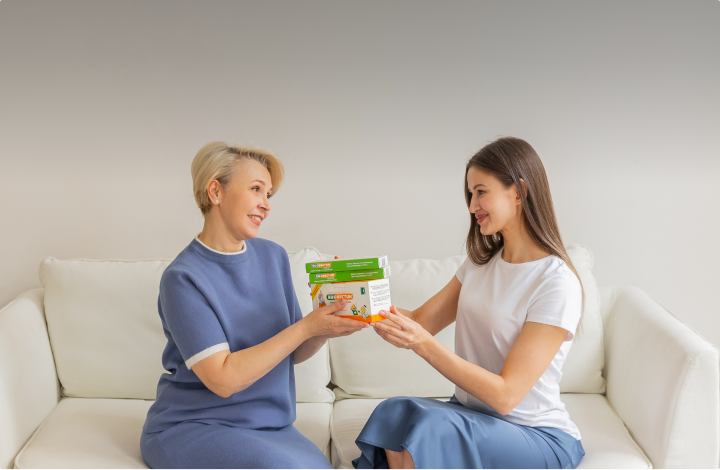

Жидкие пробиотики «БИОВЕСТИН»
Тройной эффект для улучшения пищеварения:
Пробиотик + Пребиотик + Метаболиты
фактор для бактерий
50% бифидобактерий + 50% лактобактерий
100% бифидобактерий
и красители
«Биовестин» первый в России жидкий пробиотик
«Биовестин» — это жидкие пробиотики для поддержания высокого качества здоровья и долголетия от резидента Биотехнопарка «Кольцово» и Технопарка Новосибирского Академгородка»
- «Сто лучших товаров России»
- «Лучшие товары и услуги - ГЕММА»
- «Экспортер года»
- и многие другие награды
Где купить?
Нажмите на кнопку «Заказать» и заполните форму ниже, чтобы приобрести «Биовестин» и «Биовестин-Лакто» А также здесь:
Зачем нужны пробиотики
-
Укрепляют иммунитетВлияя на все звенья иммунитета, нормализуют иммунный ответ как на бактериальные, так и на вирусные инфекции. На 30-50% снижают риск заболевания ОРВИ и ротавирусными инфекциями
-
Улучшают пищеварениеНормализуют работу ЖКТ и устраняют неприятные симптомы синдрома раздражённого кишечника (диарея, запоры, метеоризм и т.д.)
-
Выводят токсиныРазрушают токсины, снижая их концентрацию в крови и облегчают работу печени, убирают ощущение усталости и тяжести в правом подреберье
-
Устраняют аллергиюСнижают проницаемость кишечной стенки, препятствуют проникновению в кровь аллергенов, токсинов и патогенных бактерий. Снижают риск развития аутоиммунных заболеваний
-
А также:Снижают уровень сахара и холестерина в крови; помогают организму усваивать витамины и микроэлементы; способствует выработке витаминов и других веществ, полезных для здоровья; помогают в нормализации веса
Почему жидкий «Биовестин», а не сухой пробиотик?
- Количество полезных бактерий в 1 мл в 100-1000 раз больше
- Работает сразу после приема на протяжении всего ЖКТ
- Живые бактерии в активной форме, работают с 1-й секунды приемаСухие бактерии требуют активации 8-10 часов в идеальных условиях, которые сложно обеспечить
- Живые бактерии находятся в естественной среде метаболитовКоторые содержат ценные жирные кислоты (масляную, уксусную, янтарную), а также клеточные стенки бактерий, стимулирующие иммунитет
- Удобная упаковка: легкосъемный колпачок и соломинка для питьяЖидкая форма делает удобным его применение даже у маленьких детей и у пациентов, с трудом принимающих твердую пищу
Сравнение активности бифидобактерий
Сухим бактериям требуются до 6-8 часов для активации, что не эффективно при частом стуле. При сушке бактерии впадают в глубокий анабиоз, из которого восстановиться могут только через 3-5 делений после попадания в благоприятную среду. В кишечнике среда часто неблагоприятная – это антибиотики, другие лекарства, также бактерии-конкуренты за питание. Не менее 8-10 часов в идеальной среде требуется сухим бактериям для перехода к активному состоянию. За это время они успевают выйти со стулом, так и не начав действовать
В отличие от сухих, в жидких пробиотиках бактерии постоянно находятся в активном состоянии. Главное достоинство жидких пробиотиков заключается в том, что бактерии в них находятся в живой биологически активной форме. Свое благотворное воздействие они оказывают незамедлительно — сразу после приема препарата, что выгодно отличает жидкие пробиотики от аналогичных сухих препаратов
 48 часов
48 часовВыбери свой БИОВЕСТИН
Живые бифидобактерии
-
Курс:4-6 недель
-
Детям:с рождения
-
Восстанавливающий эффект
-
Устойчивость к антибиотикам 1-го поколения
Живые бифидо- и лактобактерии
-
Курс:2-4 недели
-
Детям:старше 12 месяцев или по указанию врача
-
Восстанавливающий эффект
-
Устойчивость к антибиотикам 1-го поколения
Ваши отзывы нас вдохновляют
«Биовестин» и «Биовестин-Лакто» производит группа компаний «Био - Веста»
Предприятие основано в 1994 году сотрудниками государственного научного центра вирусологии и биотехнологии «Вектор», Кольцово (Новосибирская область).
Уже более 25 лет мы занимаемся разработкой продуктов функционального питания и корректоров микрофлоры.
Био-Веста произвела 72 миллиона порций бактерий. Это 1,3 млн месячных курсов. Более 500 000 потребителей в 87 городах РФ смогли восстановить или укрепить свою микрофлору


Где купить?
Нажмите на кнопку «Заказать» и заполните форму ниже, чтобы приобрести «Биовестин» и «Биовестин-Лакто» А также здесь:Наши контакты
Производитель: компания «БИО-ВЕСТА»Резидент Биотехнопарка «Кольцово» и Академпарка